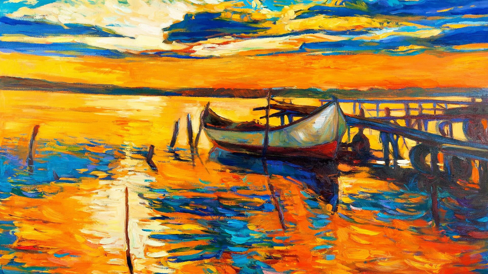

Visual Art
Visual art is a form of artistic expression that encompasses various mediums, including painting, drawing, sculpture, photography, and more. It allows artists to convey their creativity and ideas through visual elements, colors, and shapes.
Explore the beauty of visual art and discover the diverse perspectives and stories told through each piece.
Read more